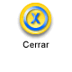
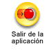

Cerrar
CerrarÍcono que permite previsualizar la información de una consulta.
Botones que permiten abrir o cerrar un área de consulta en forma dinámica.
Botón que funciona como hipervínculo para el cargue de registros en la interfaz principal.
Botón en forma de hoja con doblez, que permite que el docente ingrese algunas observaciones específicas del comportamiento de los estudiantes durante el rango de clases o evaluaciones presentadas.

Ícono que permite el cierre de sesión.
Ícono que permite volver al inicio del menú principal del módulo.

Ícono que permite salir de la actual aplicación.
Ícono que permite regresar a la interfaz anterior.
Ícono que permite gestionar las fechas para un proceso específico.
Imagen que representa la disposición de la foto del docente.